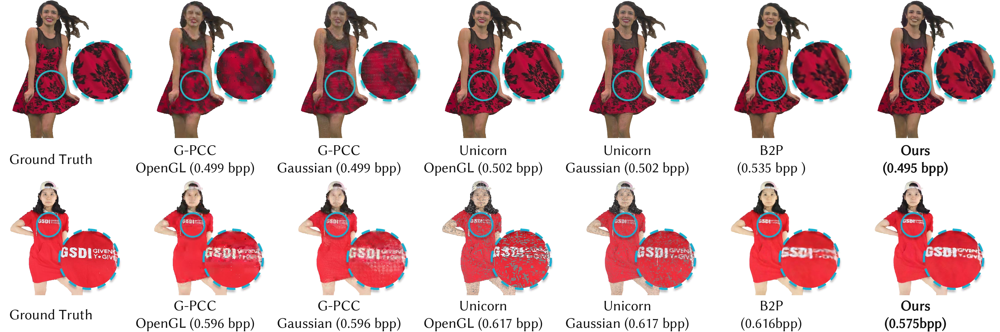

Gameleon
Gaussianizing Point Clouds for On-Demand 4D Performance Over the Air
The first compressed 3D data-to-Gaussians coding system for real-time playback. The system changes the terminal decoded representation from reconstructed colored point clouds to Gaussian primitives, allowing the compressed representation to directly serve the final screen-space display.
Rendering Visualization Comparison

Visual Demonstrations
Static Rendering Showcase
The area below presents six frames of Gaussian PLY files decoded by Gameleon, encompassing datasets such as 8iVFB, THuman, and DanceNet3D. Static rendering is performed using SuperSplat. The viewpoint can be freely adjusted for observation.
Dynamic Rendering Showcase
The area below demonstrates the effect of Gameleon's real-time decoding and rendering of dynamic 3DGS sequences, a process carried out by the prototype system we built for it. Due to web resource constraints, the real-time processing workflow is presented in the form of a recorded video.